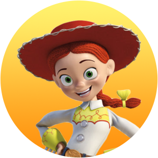

CHARACTERS
- Woody
- Woody is a cowboy doll (although the preferred term is "action figure"). As the toys' leader, and despite his fears to the contrary, he's always been Andy's favorite—no matter what new playthings enter the picture. After the owner changed from Andy to Bonnie, Woody was living with other fellow toys. However, similar to the first episode, unlike Andy, Bonnie, who does not play well with herself, feels strange alienation and disappointment. Dolly was also in charge of the leader position of the toys, but Woody was satisfied that the owner Bonnie had fun despite the feeling. And in the middle of the story, he meets his lover Bo Peep again. Later, he remains at the carnival and manipulates target-matching games with his friends to help product dolls go to children. He takes responsibility for Bonnie's most cherished toy Forky to the end and encourages those who return Forky and take it away at the expense of the most precious thing in his body. And unlike the first film, which was mentally grown and returned home, Woody has already completed all the growth from the beginning of the work. Woody's unique personality remains the same, but in the end, his purpose is to have the most basic and most ultimate form of mind as a toy. What makes the owner happy.
- Buzz
- The name Buzz comes from Buzz Aldrin, famous for its footprints on the moon surface, which fell after Neil Armstrong at the time of Apollo 11's lunar landing, and Lightyear refers to the light-year term in astronomy. In the main episode, he kept looking at Woody, who was humiliated by Bonnie, being left out and stuck in the closet, and consoled Woody, who was trying to stop her new friend Forky from being thrown away in the trash, but when Woody was mentally mature, he pressed the space suit. Then, when Woody went to save Forky, who was left behind on the trip, and didn't come for a long time, he left the back work to other friends and flew to the highway to find Woody and Forky, but fortunately, Bunny & Thekey were caught by another ride and kicked. At this time, luckily, he found Woody in the carnival and joined again on the roof of an antique store, sharing the joy of reunion with Bo Peep, who was with Woody, and helping Gabby rescue Forky. In the meantime, it is a bonus to tackle and refute the talks of Bernie and Ducky who accompany themselves.
- Bo Peep
- It is a decoration of baby lights in the shape of a shepherd lady made of pottery.Strictly speaking, it is not a toy, and it is originally placed in Molly's room, but nevertheless, he played a lot of the role of a caught heroine rescued by Woody in Andy's toy play, and he actually likes Woody each other. Before its release, Bo Peep will play the lead role in the fourth episode, and story-related information was released that Woody and Buzz are going to regain Bo Peep. Along with him, Bo Peep's new appearance was also revealed, and his appearance and attire changed significantly. Previously, it was a classic fairy tale-style costume with a rich skirt and a wide brim hat, but in Part 4, the hat disappeared, the cape was wrapped, and appeared in pants. Compared to the design of Toy Story 1, you can see that the cape is made of the skirt you were wearing, and the pants and top are underwear and underwear you were wearing. In addition, if you look closely at the design of a slightly older ceramic doll, there are small incontinence all over the body, and the right arm is broken and tape is wrapped around it.
- Forky
- Bonnie, who had difficulty in the surrounding atmosphere on the day of the preliminary call-up at Moru School, is trying to sit alone and make a pencil holder during the processing time, and a child takes the material box. Woody, who saw it, took some of the ingredients and trash that the child spilled while throwing away the apple from the trash can, and Bonnie wondered for a moment who brought it, but soon made a forky with disposable plastic spokes and various ingredients. Woody is relieved to see Bonnie, who had been depressed throughout the preliminary call-up day, happy after making Forky. Afterwards, Woody greets Forky in the bag, saying it went well to himself, but he is surprised when Forky suddenly moves alive. Since then, he has been embarrassed to see toys by Woody in Bonnie's room, and tries to escape, saying that he should be perceived as trash rather than the concept of a toy, perhaps because he is from a trash can, but he is blocked every time by Woody. Eventually, while Bonnie was asleep on a family trip, Woody escaped from the camping car, and thought it should be treated preciously because it was a toy made by Bonnie, fell out of the camping car to save him. And as I return with Woody, I listen to his past and talk to him, I begin to recognize his role as a precious object to some extent, even if he says, "I'm trash, but Bonnie's trash."
-
Duke Kaboom
Motorcycle rider toy. "Yes we Canada" is a Canadian who has a slight twist in his way of speaking.If Buzz Lightyear is a space warrior secret, this friend is stuntman Kimic. Like the four other characters as the story progresses, it is a character that undergoes internal growth.
-
Ducky & Bunny
The combination of the yellow duck doll Ducky and the blue rabbit doll Bunny is the gag characters of the original work. Each other's one hand is sewn, so they are really inseparable.
-
Rex
It is a T-Rex doll that is designed to rotate its tail like the models that were sold a lot at the time.Even though he is the king of dinosaurs, he is characterized by his kind eyes because he is for children, and his actual personality is very timid and moderate. He was also very gullible and agitated that Woody was a murderer, and when the truth came out of the truck, he panicked, "What have we done?" However, there is no toy that hates him because he is not an opportunist and just does what he wants because he is nice and gentle.
-
Slinky
A dog toy in the form of a dachshund species in which the upper and lower bodies are connected by springs. He is closest to Woody, and maybe because he is a toy dog, he can understand the dog's words. Thanks to the spring, its use mainly serves as a rope and is also used for inspection. Leaf books for friends anytime, anywhere are reliable and loyal loyal dog characters. For reference, Slinky is a trademark of American toy maker James Industrial Co., Ltd., and like Potato Head, it is an existing toy that has been made since 1940.
-
Giggle McDimples
A small police toy with Bo Peep. Originally, it was an accessory to a police officer's badge-shaped poly pocket toy set, but among them, poly pocket toys are used as a nest and they move around well even when they come out of the toy. Usually, it stands on Bo Peep's shoulder and acts as a combination of advice and comedy. Bo Peep is not a very big toy, but the giggle is even smaller compared to Bo Peep.
-

Jessie
In the fourth episode, Woody and Boppip's emotional lines are more prominent, so they appear less than Buzz, who acted together to help Woody, but he worked hard with other friends to prevent Woody and Forky from falling behind until the end, and he has small but important performances. Although the amount is small, it can be seen as the most leading toy when Woody and Buzz are not around. At the end, after greeting Bo Peep, who met after many years, he took over the sheriff's badge from Woody, who chose a free life, and later, as Bonnie's partner, Bonnie's attachment doll, he will play a role in helping Bonnie.
-
Ham
It's a piggy bank, not a toy, but Andy plays well with it as a toy. Mainly in play, vaults or evil oink plays the role of Dr. Evil Dr. Pork Chop. Since it is mainly located by the window overlooking the outside, it is not familiar with how the outside works, and the English version uses the Marine Corps accent. The position of an intellectual who knows a lot of things, perhaps reflecting that pigs are smart animals. Among the toys, he is smart after Woody and Buzz and has good judgment.
-
Gabby Gabby
It is a classic doll, and like Woody, it speaks with its own mouth that it was made in the 1950s. It was displayed in an antique store with Woody in search of Boppip's traces, and always appeared in a stroller led by Benson. When I saw Woody having a sound device similar to his, he suddenly showed extraordinary favor.